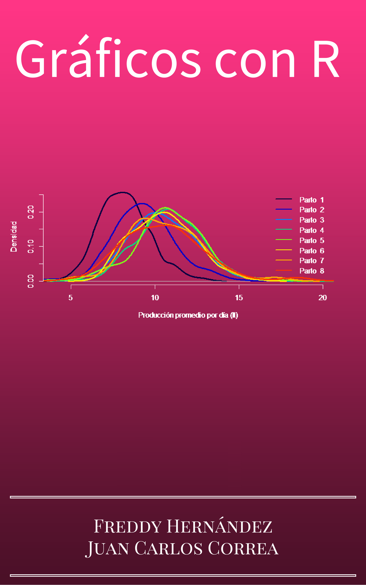

Gráficos con R
2019-07-04
Bienvenido

Este libro está destinado para estudiantes de ingeniería y estadística que deseen aprender sobre modelos de regresión y la forma de aplicarlos por medio del lenguaje de programación R.
Freddy Hernández
Juan Carlos Correa
Estructura del libro
En el capítulo se presenta el modelo de regresión lineal simple y en el Capítulo se generaliza el modelo básico con varias covariables.
Software y convenciones
Para realizar este libro usamos los paquetes knitr (Xie 2015) y bookdown (Xie 2018) que permiten unir la ventajas de LaTeX y R en un mismo archivo.
En todo el libro se presentarán códigos que el lector puede copiar y pegar en su consola de R para obtener los mismos resultados aquí del libro. Los códigos se destacan en una caja de color similar a la mostrada a continuación.
4 + 6
a <- c(1, 5, 6)
5 * a
1:10Los resultados o salidas obtenidos de cualquier código se destacan con dos símbolos de númeral (##) al inicio de cada línea o renglón, esto quiere decir que todo lo que inicie con ## son resultados obtenidos y NO los debe copiar. Abajo se muestran los resultados obtenidos luego de correr el código anterior.
## [1] 10## [1] 5 25 30## [1] 1 2 3 4 5 6 7 8 9 10Bloques informativos
En varias partes del libro usaremos bloques informativos para resaltar algún aspecto importante. Abajo se encuentra un ejemplo de los bloques y su significado.
References
Xie, Yihui. 2015. Dynamic Documents with R and Knitr. 2nd ed. Boca Raton, Florida: Chapman; Hall/CRC. http://yihui.name/knitr/.
Xie, Yihui. 2018. Bookdown: Authoring Books and Technical Documents with R Markdown. https://CRAN.R-project.org/package=bookdown.